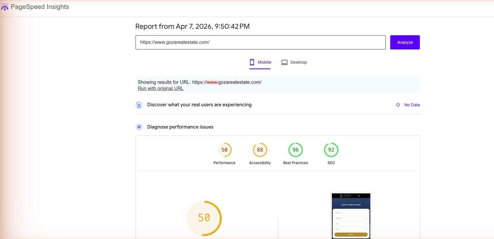

1. ¿Qué es el SEO Inmobiliario y Por Qué Tu Agencia lo Necesita en 2026?
El SEO inmobiliario es la disciplina de optimizar la presencia digital de una agencia de bienes raíces para que aparezca en los primeros resultados de Google cuando un comprador, inversionista o arrendatario busca propiedades en una zona específica. No se trata solo de "estar en internet" — se trata de aparecer exactamente cuando alguien está listo para actuar.
Los datos son contundentes: el 93% de los compradores de vivienda en México inician su proceso de búsqueda en Google (NAR, 2025). Eso significa que si tu inmobiliaria no aparece en la primera página, estás perdiendo 9 de cada 10 prospectos potenciales antes de que siquiera sepan que existes.
Además, el 46% de todas las búsquedas en Google tienen intención local (Think with Google). Cuando alguien escribe "inmobiliaria en Cancún" o "casas en venta en Playa del Carmen", Google prioriza resultados locales — y si tu perfil de Google Business no está optimizado, simplemente no apareces.
¿Por qué el SEO es más rentable que la publicidad pagada?
La diferencia fundamental es el modelo de inversión. Con Google Ads, pagas por cada clic — y en el sector inmobiliario mexicano, el costo por clic para keywords como "casas en venta cancún" puede superar los $15-$25 MXN por clic. Con 100 clics diarios, eso son $45,000-$75,000 MXN al mes solo en publicidad.
Con SEO, la inversión mensual es fija y el tráfico crece exponencialmente. Después de 6 meses de trabajo consistente, cada visitante orgánico tiene costo $0. Es la diferencia entre rentar y construir: con publicidad rentas visibilidad, con SEO construyes un activo digital que genera leads las 24 horas.
2. SEO Local: Cómo Aparecer #1 en Google Maps
El SEO local es la estrategia más importante para cualquier inmobiliaria en México. Cuando un comprador potencial busca "inmobiliaria cerca de mí" o "agencia de bienes raíces en [ciudad]", Google muestra el Local Pack — esas 3 fichas con mapa que aparecen antes de todos los resultados orgánicos. Estar ahí significa capturar el 42% de todos los clics de esa búsqueda.

Los 3 factores que determinan tu posición en Google Maps
Google clasifica los resultados locales basándose en tres factores principales:
- Relevancia: Qué tan bien coincide tu perfil con lo que busca el usuario. Un perfil completo con categorías correctas (agente inmobiliario, agencia de bienes raíces) mejora tu relevancia hasta un 70%.
- Proximidad: La distancia entre tu negocio y la ubicación del usuario. No puedes cambiar tu dirección, pero sí puedes optimizar para múltiples zonas con contenido local.
- Prominencia: Qué tan conocida es tu empresa. Las reseñas de Google, backlinks y menciones en directorios locales aumentan tu prominencia. Las inmobiliarias con más de 50 reseñas tienen 3.5x más probabilidades de aparecer en el Local Pack.
Checklist para optimizar tu Google Business Profile
- Completa el 100% de tu perfil — nombre exacto del negocio, dirección verificada, teléfono, horarios, sitio web, descripción con keywords.
- Agrega mínimo 20 fotos reales — fachada, interior, equipo, propiedades destacadas. Los perfiles con más de 20 fotos reciben un 35% más de clics.
- Genera reseñas constantemente — pide a cada cliente satisfecho que deje una reseña con 5 estrellas. Responde a TODAS las reseñas (positivas y negativas) en menos de 24 horas.
- Publica Google Posts semanales — propiedades nuevas, artículos de blog, eventos. Google premia la actividad constante.
- Mantén consistencia NAP — tu Nombre, Dirección y Teléfono deben ser idénticos en Google, tu sitio web, directorios inmobiliarios y redes sociales.
3. Las Keywords que Realmente Generan Leads Inmobiliarios
No todas las keywords son iguales. "Inmobiliaria" tiene miles de búsquedas pero cero intención de compra. En cambio, "casas en venta en Cancún centro con alberca" tiene pocas búsquedas pero una intención de compra altísima. El secreto del SEO inmobiliario está en atacar las keywords correctas.
Estos son datos reales del mercado mexicano obtenidos de DataForSEO (abril 2026):
| Keyword | Volumen/mes | CPC (USD) | Intención |
|---|---|---|---|
| marketing inmobiliario | 260 | $1.80 | Informacional |
| seo para inmobiliarias | 30 | — | Comercial |
| leads inmobiliarios | 30 | $5.75 | Transaccional |
| seo inmobiliario | 20 | — | Informacional |
| posicionamiento seo inmobiliarias | 10 | — | Comercial |
| marketing digital inmobiliarias | 10 | — | Informacional |
| seo real estate | 20 | — | Informacional |
Observa cómo "leads inmobiliarios" tiene un CPC de $5.75 USD — el más alto del grupo. Esto significa que los anunciantes pagan más por ese clic porque convierte mejor. Si posicionas orgánicamente para esa keyword, cada clic que recibes equivale a $5.75 USD de ahorro en publicidad.
Estrategia de keywords por intención
Clasifica tus keywords en 4 grupos y crea contenido específico para cada uno:
- Informacionales ("qué es el SEO inmobiliario", "cómo vender mi casa rápido") — Artículos de blog que educan y generan tráfico. Estos visitantes están en la fase de investigación.
- Comerciales ("mejores inmobiliarias en cancún", "agencia de marketing inmobiliario") — Páginas de servicios y comparativas. El visitante ya está evaluando opciones.
- Transaccionales ("contratar seo inmobiliario", "presupuesto marketing inmobiliaria") — Landing pages con formulario de contacto. El visitante está listo para actuar.
- Locales ("casas en venta cancún centro", "departamentos renta playa del carmen") — Páginas de listados por zona geográfica. El visitante busca propiedades específicas.
4. SEO Técnico: Lo que el 90% de las Inmobiliarias Ignoran
Puedes tener el mejor contenido del mundo, pero si tu sitio tarda más de 3 segundos en cargar, el 53% de los visitantes se van antes de verlo (Google). El SEO técnico es la infraestructura invisible que determina si Google puede rastrear, indexar y posicionar tu sitio correctamente.
PageSpeed: La métrica que Google sí usa para rankear
Desde 2021, Core Web Vitals son un factor de ranking directo. Las 3 métricas que importan:
- LCP (Largest Contentful Paint): Tu imagen principal debe cargar en menos de 2.5 segundos. Para sitios inmobiliarios con fotos pesadas, esto requiere compresión WebP y lazy loading.
- FID (First Input Delay): La página debe responder a interacciones en menos de 100ms. Evita JavaScript pesado que bloquee el hilo principal.
- CLS (Cumulative Layout Shift): Los elementos no deben "saltar" mientras carga la página. Define dimensiones explícitas para todas las imágenes.

Schema Markup para inmobiliarias
El schema markup es código JSON-LD que le dice a Google exactamente qué tipo de contenido tiene tu sitio. Para inmobiliarias, los schemas más importantes son:
- RealEstateAgent: Identifica tu negocio como agencia inmobiliaria con ubicación, horarios y servicios.
- Product (para propiedades): Marca cada listado con precio, ubicación, metros cuadrados, fotos.
- FAQPage: Permite que Google muestre tus preguntas frecuentes directamente en los resultados de búsqueda.
- LocalBusiness: Refuerza tu presencia local con NAP estructurado.

5. Contenido que Posiciona: Blog + AEO para Buscadores con IA
En 2026, posicionar en Google ya no es suficiente. El 34% de las búsquedas inmobiliarias ahora pasan por buscadores con IA como ChatGPT, Google Gemini y Perplexity. Cuando alguien le pregunta a ChatGPT "¿cuál es la mejor inmobiliaria en Cancún?", tu agencia necesita aparecer en esa respuesta. Esto se llama AEO: Answer Engine Optimization.
De hecho, para la búsqueda "SEO para inmobiliarias México" en Google, ya aparece un AI Overview — un resumen generado por IA antes de los resultados orgánicos. Esto significa que Google mismo está priorizando contenido que responda preguntas directamente.
Cómo crear contenido que domine Google Y los buscadores con IA
La clave es el formato answer-first: cada artículo debe comenzar respondiendo la pregunta principal en las primeras 2-3 oraciones. No hay espacio para introducciones largas ni "en el mundo actual…". El lector (y la IA) quiere la respuesta primero, el contexto después.
- Densidad de datos: Incluye al menos 5 datos verificables por cada 100 palabras. Números, porcentajes, nombres propios, fechas. Los buscadores con IA priorizan contenido con alta densidad factual.
- Formato de preguntas: Estructura secciones como "¿Qué es X?", "¿Cuánto cuesta Y?", "¿Cómo funciona Z?". Esto facilita la extracción por parte de los buscadores con IA.
- Schema FAQPage: Marca tus preguntas frecuentes con JSON-LD para que Google las muestre como rich results Y las use en AI Overviews.
- Fuentes citables: Incluye fuentes con autoridad (NAR, INEGI, AMPI, Google). El contenido que cita fuentes específicas tiene 2.3x más probabilidades de ser citado por IA.

6. Resultados Reales: Casos de Éxito en México
La teoría no vende — los números sí. Estos son resultados reales de inmobiliarias en México que implementaron estrategias de SEO y AEO profesionales:
Flamingo Real Estate
Flamingo Real Estate
GoodLife Tulum
Goza Real Estate
Flamingo Real Estate — Cancún
Flamingo Real Estate es una agencia inmobiliaria en Cancún que antes del SEO dependía exclusivamente de portales como Inmuebles24 y referidos. Después de implementar una estrategia integral de SEO local, contenido AEO y optimización técnica:
- 4.4x aumento en visibilidad de búsquedas orgánicas en 5 meses
- #1 en Google Maps para "inmobiliaria Cancún"
- +320% de tráfico orgánico mes contra mes
- 88% de leads automatizados con captura 24/7 vía WhatsApp
GoodLife Tulum
GoodLife Tulum logró un +300% de crecimiento en tráfico orgánico con una estrategia enfocada en contenido local optimizado para keywords de inversión extranjera en Tulum y la Riviera Maya.
Goza Real Estate
Goza Real Estate triplicó su volumen de leads con un sitio web de alto rendimiento (98 puntos PageSpeed), cobertura de captura 24/7 con IA, y SEO local agresivo.
Solik Real Estate
Solik Real Estate alcanzó un 95% de tasa de calificación de leads, posición #1 en Google Maps, y operación bilingüe (español/inglés) completamente automatizada.

7. SEO vs. Publicidad Pagada: ¿Cuál Rinde Más para Inmobiliarias?
La respuesta corta: ambos, pero con diferentes horizontes de tiempo. Google Ads genera leads desde el día 1 pero se detiene cuando dejas de pagar. El SEO tarda más pero construye un activo que genera leads gratuitamente durante años.
| Factor | SEO Orgánico | Google Ads | Facebook/IG Ads |
|---|---|---|---|
| Tiempo para resultados | 3-6 meses | Inmediato | 1-2 semanas |
| Costo mensual típico | $4,900-$8,000 MXN | $15,000-$50,000+ MXN | $10,000-$30,000 MXN |
| Costo por lead | $50-$200 MXN (después de 6 meses) | $300-$800 MXN | $150-$500 MXN |
| Calidad de leads | Alta (búsqueda activa) | Alta (búsqueda activa) | Media (interrupción) |
| ¿Qué pasa cuando dejas de pagar? | El tráfico sigue llegando | Se detiene inmediatamente | Se detiene inmediatamente |
| ROI a 12 meses | 5-8x | 2-4x | 1.5-3x |
| Escala | Crecimiento compuesto | Lineal (más presupuesto = más clics) | Lineal |
La estrategia óptima para una inmobiliaria en México es empezar con ambos simultáneamente: Google Ads para generar leads inmediatos mientras el SEO se construye. A medida que el tráfico orgánico crece, reduces gradualmente el presupuesto de Ads. En 12 meses, el SEO debería generar más leads que la publicidad a una fracción del costo.
8. Preguntas Frecuentes sobre SEO Inmobiliario
¿Cuánto cobra un SEO en México?
Los servicios de SEO para inmobiliarias en México oscilan entre $3,000 y $15,000 MXN mensuales. Un paquete básico incluye optimización de Google Business Profile y 2-4 artículos optimizados al mes ($3,000-$5,000 MXN). Un servicio completo con SEO técnico, contenido semanal, estrategia de backlinks, AEO y reportes mensuales ronda los $8,000-$15,000 MXN. El ROI típico es de 5-8x sobre la inversión en un periodo de 6-12 meses.
¿Qué es el SEO inmobiliario?
El SEO inmobiliario es el conjunto de estrategias de posicionamiento en buscadores aplicadas al sector de bienes raíces. Incluye SEO local para Google Maps, optimización de fichas de propiedades con schema markup, creación de contenido por zona geográfica, estrategia de keywords con intención de compra, y construcción de autoridad de dominio. Su objetivo es que tu inmobiliaria aparezca en los primeros resultados cuando alguien busca propiedades en tu zona.
¿Cuánto tarda el SEO en dar resultados para inmobiliarias?
El SEO inmobiliario muestra primeros resultados entre 3 y 6 meses. Google Maps puede mejorar en 4-8 semanas con optimización agresiva. El posicionamiento orgánico para keywords competitivas tarda 6-12 meses. Con una estrategia consistente de 4 artículos al mes, nuestro cliente Flamingo Real Estate vio un +320% de tráfico orgánico en 5 meses.
¿Cómo aparecer en Google Maps como inmobiliaria?
Completa al 100% tu Google Business Profile con fotos reales, horarios y categorías correctas. Genera reseñas constantemente (pide a cada cliente satisfecho que deje una). Mantén consistencia NAP en todos los directorios. Publica Google Posts semanales. Responde a todas las reseñas. Usa schema LocalBusiness en tu sitio web. Con estas acciones, puedes posicionarte en el Local Pack en 4-8 semanas.
¿Qué es la Optimización para Buscadores con IA (AEO)?
AEO (Answer Engine Optimization) es la estrategia para que tu inmobiliaria aparezca en las respuestas de ChatGPT, Gemini, Perplexity y Google AI Overviews. El 34% de búsquedas inmobiliarias ya pasan por buscadores con IA. Para aparecer necesitas: contenido en formato pregunta-respuesta, alta densidad de datos verificables, schema markup avanzado, y ser citado como fuente autorizada en tu nicho.
¿Cuáles son las 4 P del marketing inmobiliario?
Las 4 P del marketing inmobiliario son: Producto (la propiedad y su presentación), Precio (estrategia competitiva con análisis de mercado), Plaza (distribución en portales, Google Maps, redes, sitio web), y Promoción (SEO, publicidad digital, email marketing, contenido). En 2026 se agrega una quinta P: Presencia en IA — aparecer en ChatGPT, Gemini y Perplexity.
¿Quieres que tu inmobiliaria domine Google en 2026?
Agenda una consultoría gratuita de 30 minutos donde analizaremos tu posicionamiento actual y te mostraremos exactamente qué necesitas para aparecer #1 en tu zona.
Agendar Consultoría Gratuita → O escríbenos por WhatsApp: +52 998 202 3263